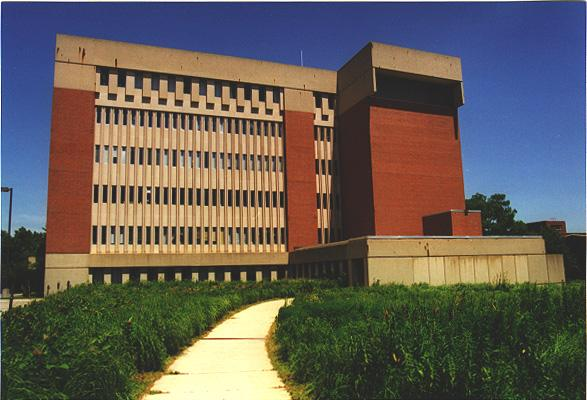

In the foreground are native plants. Biological and ecological aspects of insects, plants and animals are studied here.
Section Index | Main Menu | Homepage
Fair use of these photos for educational purposes is permitted.
© Richard Carlson
In the foreground are native plants. Biological and ecological aspects of insects, plants and animals are studied here. | |
|  | |
Section Index | Main Menu | Homepage Fair use of these photos for educational purposes is permitted. | |
|---|---|